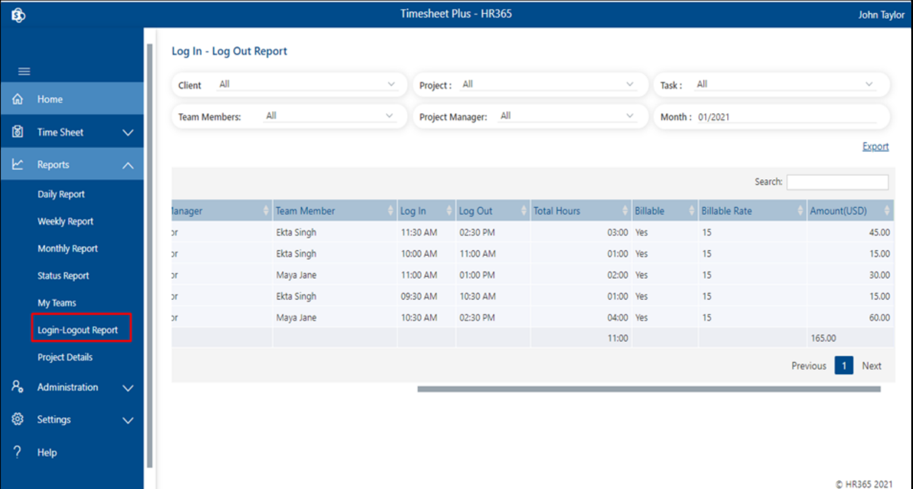

Reports
Here we can generate reports of timesheetss of the users. There are different kinds of reports like daily reports, weekly reports, monthly reports, status reports, my team, login-logout reports and project details.
Admin can generate all the reports whereas project manager can generate only their projects reports.
-
Login-Logout Reports
Timesheet reports with login and logout time can be generated from here. This report can we generates only when users submit daily reports or track time using tracker type log time. Click on login logout reports under reports from side panel as shown in below image

-
Reports pages table column setting.
Admin can enable or disable column for the tables of daily reports, weekly reports and monthly reports pages.
First go to the report page, click on gear icon located on top right, column display page will open, select or unselect check boxes as per your requirement and finally click on save button as shown in below image.
Daily Reports
Here daily reports get generated for a selected month.
Click on the daily reports under reports from the side panel. This displays the daily report page.
Select filters as per your requirement and click on apply the filter button.
- To export all the filtered-out reports in excel file, you can click on Export link which is located right top corner of the table.
- To export all the filtered-out reports in excel file along with user's comments, you can click on “Export with comments” link which is located right top corner of the table.
Monthly Report
Here admin can generate all project reports for a selected month, click on monthly reports under reports
from side panel, monthly report page will open, select filters first as per your requirement then click
of apply filter button as shown in below image.
- To export all the filtered-out reports in excel file, you can click on Export link which is located right top corner of the table.
My Teams
Here admin can generate all projects reports based on projects or team member for selected week or month along with status (Approved or submitted). Click on my team from side panel under reports, my team report page will open.
Projects based reports. First select view as, select week or month and then select status and billable, all data related to filter will shows up. All project's reports will display in first table and then individual project reports in separate table.
Team members-based reports: First select view as, select week or month and then select status and
billable, all data related to filter will shows up. All team reports will display in first table and
then individual member reports in separate table.
Projects Details
We can find all the details of the projects from Project details. Click on project details under reports from side panel and select project from project report as shown in below image.
- When you filter out project from project filter below information can be find.
- Total Project allocated hours, tracked and remaining hours with percentage.
- Project team members.
- Project's billable type, project manager, project start date etc
- You can find document which was attached during project creation.
- timesheets reports as shown in below image
Status Reports
Here admin can generate all projects task status reports. Click on status reports under reports from side panel, status report page will open as shown in below image. Here we can notify to the users in case when task deadline is overdue or to provide information regarding their task, select the check box from the action column, click on notify button, comment popup will appear, add comments and finally click on submit button as shown in below image.
To export all the filtered-out reports in excel file, you can click on Export link which is located right top corner of the table.
Weekly Reports
Here admin can generate all projects daily reports for a selected week, click on weekly reports under
reports from side panel, weekly report page will open, select filters first as per your requirement then
click of apply filter button as shown in below image.
- To export all the filtered-out reports in excel file, you can click on Export link which is located right top corner of the table.
- To export all the filtered-out reports in excel file along with user's comments, you can click on “Export with comments” link which is located right top corner of the table.